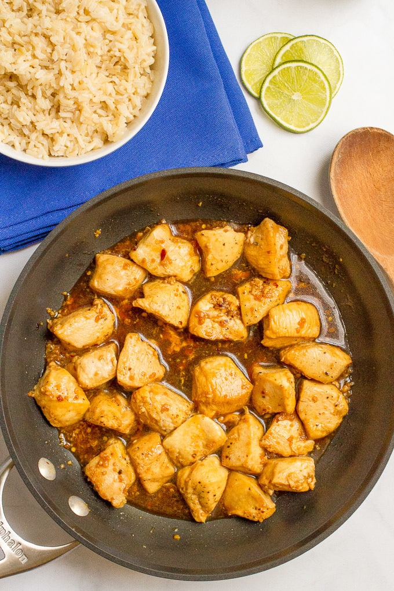

15-MINUTE HONEY GARLIC CHICKEN
Recipe by Kathryn

INGREDIENTS
-
2 teaspoons olive oil (or canola oil)
-
1 1/2 pounds boneless, skinless chicken breasts, cut into small cubes (about 1/2 inch)
-
Salt and black pepper
-
3 tablespoons honey
-
3 tablespoons low-sodium soy sauce
-
3 cloves garlic, minced
-
1/4 teaspoon red pepper flakes (optional, adjust for heat).
-
For serving (optional): brown rice, sliced green onions, sesame seeds, lime wedges to squeeze over
chicken.
INSTRUCTIONS
-
Heat olive oil in a large skillet over medium-high heat.
-
Lightly season the cubed chicken with salt and pepper. (Go easy because the soy sauce has plenty of
sodium.)
-
Add the chicken to the skillet and brown on one side, about 3-4 minutes.
-
Meanwhile, make the glaze. Whisk the honey, soy sauce, garlic and red pepper flakes, if using, in a small
bowl until well combined.
-
Add the sauce to the pan and toss to coat the chicken pieces. Cook until chicken is cooked through, 4-5
more minutes.
-
Serve with steamed rice and top with green onions, sesame seeds and a squeeze of lime juice, if desired.
NOTES
Be careful not to overcook the chicken. The pieces are small so they cook fast, which is kinda the point with
this dinner. But you don’t want them to go too far and be overdone. On the other hand, that sauce is seriously
so good, it’ll disguise your chicken if it gets a little overdone.
You could substitute boneless, skinless chicken thighs in place of the chicken breasts if you prefer, but the
cooking time will be longer.
To make a complete meal, just add some steamed rice and a veggie.